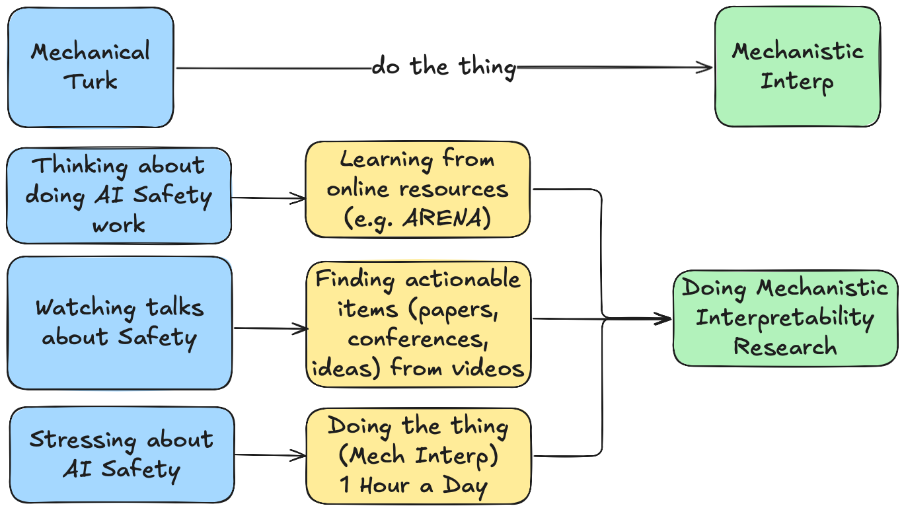

Doing The Thing: From Mechanical Turk to Mech Interp
For motivation/momentum purposes: Started AI Safety journey 101 days ago with current daily streak of "doing the thing" for 1 consecutive days!
Updates
-
In the UK working from LISA from Monday, January 19th to Friday, January 23rd; worked from Trajan House, Oxford Monday, January 5th to Friday, January 16th
a. Looking to meet more AI Safety folks! Please let me know if you would like to meet up; happy to travel to meet!
-
Reflections from ARBOx including work in progress Theory of Change
-
Currently working on an Automated Interpretability Project extending Neo et al. 2024 Interpreting Context Look Ups. I'm also interested in:
a. Automated Circuit Tracing (e.g. developing Agents to automatically find circuits in Neuronpedia like attribution graphs)
b. Cross-lingual alignment (e.g. Does aligning a model in English mean it's aligned in Chinese?)
TLDR of Things I've Done Since Starting My AI Safety Journey 101 Days Ago
Projects
-
Cross-Linguistic Alignment: Does LoRA Fine Tuning a model on a task (e.g. respond in all CAPS) translate cross-linguistically? (Summary && Github)
-
Reproducing Neo et al. 2024 Interpreting Context Look Ups
-
Multilingual Semantics Probe: Looking for Steering Vectors for semantically ambiguous sentences in English but not Mandarin
-
Syntactic Dependencies in Transformers: Attention Patterns for Balanced Parentheses (Dyck) Language (Github)
Programs
-
ARBOx: 2 weeks of compressed ARENA curriculum; project on Cross-linguistic generalization of fine-tuning
-
Attended NeurIPS Mech Interp 2025 Workshop and found some cool takeaways!
-
Started being mentored by Sudhanshu Kasewa from 80,000 Hours
What is this?
Here it goes! I'm Kyle, a 4th year Computational Linguistics student at USC. This is the start of my AI Safety journey! I am very greatful to be mentored by Prof. Khalil Iskarous at USC.
I learned about AI Safety from the Seattle Llama4 Hackathon on June 21st, 2025 where I learned of AI 2027. After finishing an awesome summer of engineering, I realized the problems which excite me the most lie at the crossroads of engineering and science (computation and linguistics).
The urgent need for understanding increasingly capable AI models coupled with a burning passion for working at the interdisciplinary intersection of NLP, linguistics, and engineering at scale has sharpened my goal: to become an AI Safety researcher in Mechanistic Interpretability.
Working Backwards
Sometimes (often) I get analysis paralysis or want to wait for the perfect {time, situation, background, preparation} to start which makes it difficult to get into pursuing my goals (and dreams). So this time around, I know my goal to become an AI Safety/Mech Interp researcher! After finding David Quarel's do the thing I decided that this site is a place where I will keep myself acountable for doing the thing.
- Doing --> Working through math problems, reading papers, writing down lists of possible intersections of linguistics and NLP
- The Thing --> Any of the above for at least 1 hour every day, with consistent (though not perfect) progress.

What is dlog?
I am starting this daily log or dlog where every day I will document my progress. I hope that the daily act of documenting will make me more resilient and help prove to myself how badly I want to be an interpetability researcher. With the help of AI, a macro pulls the daily logs into the summary you see below:
Extra Stuff (click me)
Wait What's Computational Linguistics?
As a Computational Linguistics student, I see Computational Linguistics as three parts:
- Linguistics = study of human language processing / cognition
- Mechanistic Interpretability = study of LLM language processing / cognition
- Computational Linguistics = Interdisciplinary approach to studying LLM language processing
The Computational Linguistics topics that pull me at 9.8 m / s^2 are concepts like Information Theory and Probabilistic Phonology in addition to Theoretical Machine Learning and NLP.
What does AI Safety and Mechanistic Interpretability mean to me?
- I hope that having deep knowledge in both the fields of linguistics and ML/NLP can help me build a more holistic understanding of LLM cognition and language processing.
- I see Mechanistic Interpretability as a sort of psycholinguistics (the study of real-time processing of language) for LLMs.
- Furthermore, I see Mechanistic Interpretability as a foundational basis for understanding AI systems. Perhaps understanding models (such as like biological organisms) can support the other branches of AI Safety (alignment, control, governance, and more).
dlog: 101 Days and Counting
Total time focused so far: 304 hrs 28 mins throughout 101 days of learning
Below are the latest updates (auto-generated).
Latest entries
-
2026-02-24 | 0 hr 0 min | Goal: Read up on Feature Splitting + Update ReadMe and Add Documentation for Eigen Spectrums
Understand failure mode of Feature Absorption/Splitting in Attribution GraphsMaxwell Circuits
-
2026-02-20 | 0 hr 0 min | Goal: Understand Path, Full, and Dyck Spectra and Eigenvectors
__Maxwell
-
2026-02-18 | 2 hr 0 min | Goal: Support Dyck Graphs + Understand Fully Connected/Star/Dyck Spectra
Finish visualization of Graph TypesMaxwell
-
2026-02-17 | 2 hr 50 min | Goal: Extract + Visualize Eigenvalue Spectrums, Eigenvectors, and Topology for Star and Path Graphs
Visualizations and Graph Type Extractions (Dyck Graphs WIP)Maxwell
-
2026-02-16 | 0 hr 20 min | Goal: Extract Spectrums and Eigenvectors for Star and Path Graphs
Documented tasks to do, punting completion to tomorrowMaxwell
-
2026-02-13 | 1 hr 0 min | Goal: Weekly Research Meeting with Jonathan
Derive the Rayleigh equation from first principles with Jonathan (edge vs. node centric)Maxwell
-
2026-02-12 | 1 hr 25 min | Goal: Understand Rayleigh Quotient for Eigenvectors
Previous days did not do documentation, will be more dilligent about documenting! Focusing on first principles intuitions for deriving eigenvalues as maximal disharmony of a graphMaxwell
-
2026-02-07 | 10 hr 0 min | Goal: Building PCD on a Student Budget: docs
Big day at the library! Understood PCD paper and started implementation; aimed to do with minimal AI AssistancePCD Paper Reproduction
-
2026-02-06 | 2 hr 0 min | Goal: Understand Laplacian as Mean Value Operator | Read PCD Paper
Deep Dive on how Path Graphs generate Second Derivatives | Read Section 3 of PCD paperEigenvectors Maxwell PCD
-
2026-02-05 | 2 hr 30 min | Goal: Eigenvectors and Spectrum
Learning about Maxwell's Equations for Language Processing in LLMsEigenvectors Maxwell
Todo List
The todo list started getting too beefy and has been moved to its own todo page!